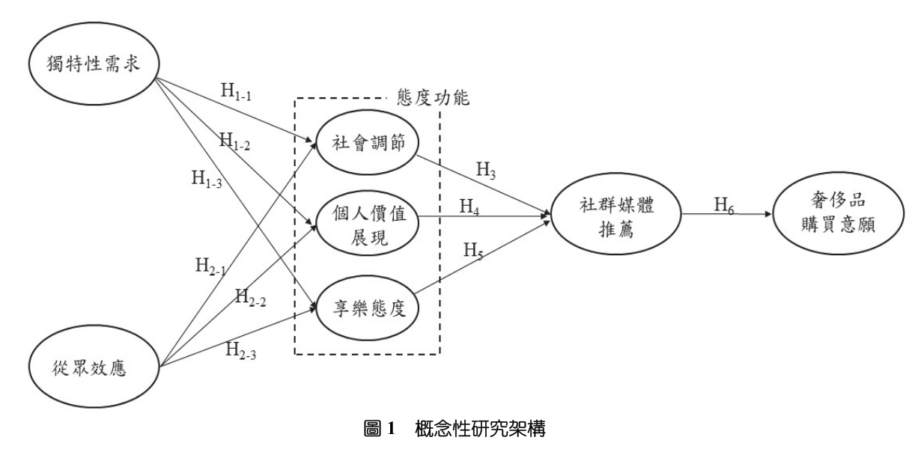

社群媒體口碑行銷對台灣 Z 世代購買奢侈品意願之前因後果探究
Antecedents and Outcomes of Social Media Recommendations in Intention to Purchase Luxury Brands among Generation Z in Taiwan
p. 143 (1/27)中文摘要
隨著社群媒體的普及，消費者透過社群平台獲取奢侈品資訊的管道更加便利，社群媒體口碑行銷（或社群媒體推薦）成為影響消費者購買意願的重要工具。本研究運用態度功能理論（包括社會調節、個人價值展現、享樂態度）及社群媒體推薦作為中介，探討獨特性需求與從眾效應對台灣 Z 世代購買奢侈品意願的影響，同時加入人口統計特徵作為調節變數。
研究結果顯示，台灣 Z 世代的奢侈品購買行為主要受到從眾效應的影響，其影響力高於獨特性需求，反映 Z 世代更傾向追求社會認同與群體歸屬感。此外，態度功能對奢侈品購買意願具有中介效果，其中社會調節與個人價值展現均透過社群媒體推薦間接影響購買意願，而享樂態度的直接影響力則顯著高於間接影響。因此，本研究建議奢侈品牌在行銷策略上應著重 Z 世代的從眾心理，善用社群媒體推薦以提升消費者購買意願。
關鍵字：Z 世代、獨特性需求、從眾效應、態度功能、社群媒體口碑行銷。
pp. 143–145 (1–3/27)壹、緒論
根據《Global Powers of Luxury Goods 2023》報告指出，奢侈品產業正在加速朝向數位化和永續發展的方向 (Deloitte, 2023)。在這趨勢下，Z 世代消費者在奢侈品市場中展現出特有的消費模式，他們重視品牌的核心價值及其社會責任，同時他們也偏好能彰顯個人風格和定制化產品，並注重購買過程中的體驗和品牌所傳遞出的故事。Z 世代主要透過數位平台與品牌互動，他們習慣在社群媒體上發現並購買奢侈品，這使得他們成為市場中不容忽視的重要力量。
Z 世代在現今奢侈品市場中的重要性不可低估。他們不僅在消費習慣上引領潮流，還逐漸成為奢侈品品牌的主要目標客群。與戰後嬰兒潮一代、X 世代和 Y 世代相比，Z 世代更依賴數位技術和社群媒體，他們對產品的個性化、即時性體驗和社會責任有更高的要求，這與前幾代注重產品品質和品牌傳統的消費特徵形成鮮明對比。此外，有能力購買奢侈品的 Z 世代族群擁有較高的可支配收入，這得益於斜槓兼職或投資理財而增加收入，讓他們更有機會及能力購買奢侈品 (Gen Z Planet, 2021)。這些特徵使得 Z 世代不僅成為奢侈品市場的重要消費力量，也迫使奢侈品品牌在行銷策略上做出調整，以迎合這一新興客群的需求 (Cho, Kim-Vick, & Yu, 2022; Shin, Eastman, & Li, 2022)。Z 世代的影響力正逐漸超越前幾代，成為奢侈品市場未來發展的關鍵驅動力 (Cho et al., 2022)。在 Z 世代的推動下，奢侈品首購者的年齡已降至 18 至 20 歲，未來可能會進一步降低（尹俊傑，2023）。
為了與 Z 世代消費者建立強大品牌關係，奢侈品牌必須依靠數位技術，透過社群媒體進行互動並提供個性化購物體驗。隨著社群媒體（如 Facebook、Instagram）的興起，奢侈品牌的行銷策略從傳統電視和雜誌廣告轉向社群媒體。例如，GUCCI 在 2016 至 2017 年間積極利用 Instagram、TikTok 等平台與 Z 世代雙向互動，並透過電子口碑 (electronic word-of-mouth, eWOM) 行銷方式吸引年輕消費者 (Yang, 2017)。由此，在現代社群媒體蓬勃發展的背景下，導致社群媒體口碑行銷 (Social Media WOM)，或社群媒體推薦方式盛行，成為奢侈品牌吸引年輕族群的重要策略之一 (Kim & Ko, 2012; Shin et al., 2022)。
奢侈品消費的意義隨著時代的變遷而演變。過去，奢侈品主要象徵著社會地位和富裕階層的身份標誌，然而，隨著奢侈品牌在大眾市場的普及，奢侈品的消費族群也逐漸擴大。正如 Kessous and Valette-Florence (2019) 所指出，奢侈品曾經是非凡人的平凡，如今則成為普通人的非凡。這一轉變在 Z 世代中尤為明顯，他們大多都是基於個人價值觀而購買奢侈品 (Kapferer & Laurent, 2016)。
對於 Z 世代來說，奢侈品消費既是一種自我表達，也是一種社會互動方式。有的消費者購買具有高度辨識度的奢侈品，以彰顯自我獨特性 (uniqueness)，滿足在社會環境中脫穎而出的需求 (Kauppinen-Räisänen, Björk, Lönnström, & Jauffret, 2018)，也有消費者購買當下流行的奢侈品則滿足了從眾效應 (bandwagon effect)，使他們在群體中獲得歸屬感和社會認同 (Wong & Ahuvia, 1998)，這些消費行為皆可以透過態度功能理論 (Attitude Function Theories) 來解釋。
Voss, Spangenberg, and Grohmann (2003) 提出，態度功能包括社會調節 (social-adjustive)、個人價值展現 (value-expressive) 和享樂態度 (hedonic)。社會調節功能幫助消費者更好地融入群體，強調個體與他人之間的連結 (Shavitt, 1990)。個人價值展現則體現了內在自我價值，形塑了消費者的社會地位 (Vigneron & Johnson, 1999)。享樂態度則滿足了消費者的即時享樂需求，帶來強烈的情感滿足 (Wegener, Petty, & Smith, 1995)。
態度功能理論不僅解釋了消費者為何形成、維持或改變對奢侈品的態度，也闡明了這些態度如何在滿足心理和社會需求中發揮多元功能。獨特性需求和從眾效應作為兩種主要的心理動因，分別引導著消費者選擇不同的奢侈品消費策略，這些策略反映了奢侈品在不同情境下的多元價值 (Grewal, Mehta, & Kardes, 2004)。
在這一背景下，奢侈品品牌透過各種在社群媒體的行銷活動，因使用者的分享、評論和推薦，成為影響消費者對奢侈品態度的重要途徑。這種互動不僅滿足了價值表達和社會調節的功能，也潛移默化地影響了消費者對奢侈品的認知，使他們更傾向於透過購買奢侈品來展現個人價值觀、社交地位以及身份認同 (Kim & Ko, 2012; Shin et al., 2022)。在態度功能理論的影響下，社群媒體推薦進一步加強了奢侈品購買意願，並塑造了奢侈品在消費者心中的獨特價值，形成一種相互支持的關係。
儘管已有文獻探討 Z 世代與奢侈品牌的關係，但大多數研究集中於品牌偏好 (Timonina, 2022) 和消費行為 (Schade, Hegner, Horstmann, & Brinkmann, 2016; Shin et al., 2022)，對於 Z 世代在奢侈品消費中的心理機制尚缺乏深入分析。本研究以台灣 Z 世代為焦點，特別探討社群媒體推薦在奢侈品消費中的作用，彌補了現有文獻中對這一群體的不足之處。
本研究以態度功能模型為基礎，建立調節中介模型。將獨特性需求和從眾效應作為主要探究因素，並透過態度功能（社會調節、個人價值展現、享樂態度）與社群媒體推薦作為中介變量，探討台灣 Z 世代的奢侈品購買心理機制。此外，還考慮了消費者的人口統計特徵（如年齡、性別、教育程度、家庭年收入、個人可支配所得）的調節效果，以回答以下問題：
- 在台灣 Z 世代中，獨特性需求與從眾效應何者對奢侈品消費具有更強的驅動力？
- 態度功能與社群媒體推薦在奢侈品消費中的中介效果如何？
- 消費者人口特徵對這些心理機制的調節效果是什麼？
- Z 世代的奢侈品消費特性與過往消費群體有何不同，並據此提供行銷管理建議。
隨著 Z 世代在奢侈品市場中的比例增加，這一群體不僅改變了市場動態，還推動了奢侈品牌在數位化和可持續性方面的創新與調整。Z 世代對奢侈品市場的影響日益增強，奢侈品牌需要深入瞭解這一群體 (Shin et al., 2022)。由於 Z 世代與早期世代在奢侈品認知上的差異，理解他們的消費心理及其受到的內外部影響至關重要。本研究結果顯示，台灣 Z 世代的購買行為強烈受到從眾效應的驅動，突顯了社會認同與集體歸屬感在其奢侈品消費中的關鍵作用，這為奢侈品牌的數位行銷策略提供了新的視角。透過與其他相關研究的比較，本研究為現有理論與實證研究提供了有價值的補充。
本文的研究架構如下：首先，緒論部分說明研究動機與目的，探討 Z 世代在奢侈品市場中的影響及其在數位技術和社群媒體方面的熟悉度對市場變化的影響。接著，文獻回顧與研究假說，特別是態度功能理論和社群媒體推薦的研究，並根據這些文獻建立研究假說。第三部分介紹研究方法，包括研究架構、問卷設計及衡量，詳細說明資料收集與分析的過程。第四部分討論實證結果，檢驗研究假說，闡述態度功能和社群媒體推薦對奢侈品購買意願的影響。最後，第五部分總結研究結論，提出學術貢獻和實務應用，並指明未來研究方向。
pp. 145–149 (3–7/27)貳、文獻探討與研究假說
一、Z 世代與奢侈品消費
Z 世代，出生於 1996 年至 2012 年間，也被稱為數位原住民。他們在成長過程中深度接觸網路、社群媒體和即時通訊等 3C 科技，成為第一個在電子虛擬世界和現實世界中成長的世代 (Elmore, 2015)。Z 世代善於運用社群媒體，將其作為主要的交流平台。Badgaiyan and Verma (2015) 指出，Z 世代對各種技術和平台非常熟悉，在消費行為上展現更多元特性，超過 50% 的人願意在應用程式平台進行消費，並在服裝、書籍和娛樂等心靈領域有較高支出意願。然而，社群媒體的普及也給他們帶來了巨大的社會壓力，需要時刻保持最佳形象，同時享受網路帶來的便利 (Geck, 2006)。
Z 世代在社群媒體上的消費決策高度依賴同儕推薦，並受到圖文和 #Hashtags 等宣傳影響 (Virtanen, Björk, & Sjöström, 2017)。商家透過即時滿足和折扣策略來刺激衝動性購物。奢侈品以高品質、卓越工藝和品牌聲譽為特點，涵蓋時尚服飾、珠寶等高價值商品，且常在品牌精品店中銷售 (Kim & Lee, 2015)。研究顯示，消費者對奢侈品的定義具有多樣性，包括傳統和日常奢侈品等 (Brun & Castelli, 2013)。
Z 世代購買奢侈品的原因主要包括獨特性需求和從眾效應。獨特性需求反映了 Z 世代藉由擁有稀缺或獨家的奢侈品來展示自我價值 (Grubb & Grathwohl, 1967; Tian, Bearden, & Hunter, 2001)。奢侈品牌透過排他性滿足這一需求，並在社群媒體中助長此趨勢，使 Z 世代能分享和傳遞奢侈品牌資訊。在西方文化中，這種獨特性與個人主義和自戀價值觀密切相關。另一方面，從眾效應則體現在 Z 世代追隨社會潮流，特別是在社群媒體中，他們可能受到「意見領袖」或同儕影響，進而購買奢侈品。因此，Z 世代的奢侈品購買決策既可能源自於獨特性需求，也可能是社群媒體驅動的從眾行為。
Tafani, Vigneron, Azoulay, Crener, and Zahid (2024) 研究發現，西方國家（如法國和美國）的消費者相比東方國家（如阿聯酋和中國）的消費者，更加重視奢侈品的精緻性、傳承性和獨特性。這一發現與 Shukla (2011) 的研究結果相呼應，後者指出，東方國家的消費者（如印度消費者）更容易受到社會群體的規範影響，因而在奢侈品購買意願上更依賴於外界的社會壓力。這表明東方消費者在奢侈品消費中，更注重社會認同和群體規範。Kapferer and Valette-Florence (2018) 的研究則進一步補充了東西方消費者在奢侈品消費行為上的差異。他們發現，當奢侈品品牌逐漸大眾化，西方國家的消費者因感知到獨特性降低，從而降低了購買意願。綜合上述研究可以看出，西方消費者更重視奢侈品的內在價值和獨特性，而東方消費者則更容易受到社會規範的影響，進而影響其購買決策。這些研究共同揭示了東西方文化在奢侈品消費動機上的顯著差異。
二、理論背景介紹
在奢侈品消費行為研究中，獨特性與從眾效應需求被視為兩個核心的動機 (Bahri-Ammari, Coulibaly, & Mimoun, 2020; Jebarajakirthy & Das, 2020)。此雙重動機不僅為消費者在奢侈品的消費模式提供了重要的理論基礎，更闡明了消費者對奢侈品購買意願的影響。
就獨特性需求而言，研究發現消費者傾向透過購買稀缺性高的奢侈品來滿足此種需求，此行為反映了消費者欲與他人產生差異化的深層心理動機 (Tian et al., 2001; Jebarajakirthy & Das, 2020)。這種獨特性需求不僅會顯著提升消費者對奢侈品的購買意願 (Jebarajakirthy & Das, 2020; Kastanakis & Balabanis, 2014)，更如 Snyder (1992) 指出，具有高度獨特性需求的消費者往往藉由購買奢侈品來彰顯其個人價值。此外，獨特性需求的影響力已超越消費者行為層面，進而深入影響奢侈品品牌的行銷策略制定，使其成為奢侈品廣告的核心元素之一 (Amaldoss & Jain, 2005)。
在從眾效應方面，Leibenstein (1950) 指出當消費者購買奢侈品時，會提高其他消費者對該產品的需求。Bahri-Ammari et al. (2020) 發現消費者透過購買特定奢侈品來獲得群體認同，從而形成從眾消費的行為模式。隨著奢侈品知名度提升，消費者的購買意願隨之增加 (Shaikh, Malik, Akram, & Chakrabarti, 2017)，最終提高大眾消費者對於奢侈品的認可 (Das, Habib, Saha, & Jebarajakirthy, 2021)。
本研究旨在探討 Z 世代對奢侈品牌的消費意願，特別關注其消費行為是否基於獨特性需求或從眾效應。Z 世代的消費行為受到多種心理機制驅動，而態度功能理論提供了一個全面的解釋框架。該理論由 Katz (1960) 提出，認為個人的態度服務於多種心理功能，包括社會調節、個人價值展現和享樂態度，這些功能在不同程度上滿足了個體的需求。近年來，該理論廣泛應用於消費者行為研究，特別是在奢侈品消費領域。
首先，社會調節功能強調個體如何透過行為和表現影響他人對自己的印象。這類消費者特別關注自身在社會互動中的表現，使自己在與他人的社會互動能更順利或更有效率，購買奢侈品有助於增強其社會形象，達成社會目標 (DeBono & Snyder, 1989)。其次，個人價值展現功能側重於透過消費展示自我身份、地位和財富，以獲得他人的尊重 (Vigneron & Johnson, 2004)。購買奢侈品被視為提升社會地位和塑造社會形象的方式，能夠在他人心中留下深刻印象 (Brun & Castelli, 2013)。Bian and Forsythe (2012) 發現，社會調節功能反映了消費者希望透過奢侈品購買來獲得社會認可和融入上層社會的傾向，而價值展現功能則強調使用奢侈品牌來展示自我身份和核心價值。最後，享樂態度功能強調產品或服務帶來的娛樂和情感價值 (Babin, Darden, & Griffin, 1994)。購買奢侈品不僅提供審美和感官愉悅，還能引發愉悅和興奮的情感體驗 (Hirschman & Holbrook, 1982)。Eastman, Iyer, Shepherd, Heugel, and Faulk (2018) 指出，年輕消費者在選擇奢侈品牌時，不僅考慮產品品質和功能，還重視享樂功能，即從購買和擁有奢侈品牌中獲得的愉悅和滿足感。
Z 世代的奢侈品消費同時受到獨特性需求和從眾效應的影響。購買具有高度辨識度的奢侈品能夠滿足個人獨特性的需求，並在社會環境中實現自我表達 (Kauppinen-Räisänen et al., 2018)。同時，購買當下流行的奢侈品符合從眾效應，使消費者獲得群體歸屬感和社會認同 (Wong & Ahuvia, 1998)。
相比態度功能理論，社會影響理論 (Social Influence Theory) 主要強調社會壓力如何影響個體行為，關注外部社會環境的影響 (Sherif, 1936)。而社會認同理論 (Social Identity Theory) 則側重於個體如何透過群體認同塑造自我形象 (Tajfel, 1974)。然而，這兩種理論未能全面解釋個體的多重心理需求。態度功能理論則更全面地涵蓋了社會環境影響和個體內在需求。因此，本研究採用態度功能理論作為主要理論框架，探討 Z 世代在奢侈品消費中的心理機制，以理解他們的消費行為是否基於獨特性需求或從眾效應。
三、獨特性需求對態度功能之影響
根據 Snyder and Fromkin (1980) 的獨特性需求理論，消費者為了與他人區別，會追求稀有產品以保持適度的獨特性。當個人的獨特性需求受到威脅，如發現自己與他人過於相似時，會激發其對與眾不同的渴望。Verhallen and Robben (1994) 指出，稀少性能刺激消費者的購買慾望，提升購買意願，並使其願意支付更高的價格來獲得商品。這類消費者往往希望同時滿足獨特性需求和社會認同。
Tian et al. (2001) 進一步闡明，消費者會透過獲取、使用和處置消費品來展現與他人不同的特徵，以增強自我意識形象和社會形象。Grubb and Grathwohl (1967) 也指出，消費者對商品獨特性的追求反映了他們在建立自我形象及社會形象的過程中所扮演的角色。奢侈品牌利用獨特的設計來滿足這些消費者的需求。Kauppinen-Räisänen et al. (2018) 發現，對獨特性需求較高的消費者更傾向於積極使用奢侈品牌來表達個性。
態度功能理論提供了一個解釋消費者態度的框架，強調態度的多種功能，包括社會調節、個人價值展現和享樂態度。這些功能有助於解釋消費者對奢侈品的態度如何影響其行為。在社會調節功能中，擁有稀有或獨特的奢侈品作為社會符號，幫助消費者在同儕群體中獲得認可和提升地位，從而達到社會調節的目的。因此，我們提出假設 H1-1：
其次，在個人價值展現功能中，獨特的奢侈品反映消費者的個人品味和價值觀。消費者透過這些商品來展現自我獨立性和與眾不同的生活選擇，滿足個人的自我表達需求。購買奢侈品被視為展示自我身份、地位和財富的方式，以獲得他人的尊重。因此，我們提出假設 H1-2：
最後，享樂態度功能強調，獨特的奢侈品不僅提供感官上的愉悅，還帶來心理上的滿足。消費者享受物質上的獨特性，同時也從擁有這些商品中獲得心理愉悅和自我滿足。奢侈品被視為具有強烈情感成分的「想要」產品，能提供體驗性的樂趣、愉悅和興奮。因此，我們提出假設 H1-3：
四、從眾效應對態度功能之影響
根據 Leibenstein (1950) 的從眾效應理論，消費者會因為他人也在使用某一產品或服務，而選擇購買該產品或服務。這種行為反映了消費者希望模仿或追隨他人的行為，以符合社會趨勢或主流潮流，從而增強其社會認同感和歸屬感。從眾效應尤其在奢侈品消費中顯著，消費者往往會因為他人的行為而改變自身選擇。
從眾效應可以透過三個具體類型來分析。例如，資訊性從眾指的是消費者看到朋友或名人在社群媒體上展示奢侈品後，選擇購買相同品牌的產品 (Deutsch & Gerard, 1955)。規範性從眾則是消費者為了融入高端社交圈，購買符合該圈子標準的奢侈品 (Asch, 1956)。表現性從眾則體現在公開場合展示奢侈品，以表現自己與主流趨勢的一致性 (Bearden & Etzel, 1982)。Santor, Messervey, and Kusumakar (2000) 將潮流消費定義為個體受同儕團體影響而購買特定奢侈品，以獲得群體認可或與某個群體聯繫起來 (Bahri-Ammari et al., 2020)。
在態度功能與從眾效應的關係中，首先，社會調節功能強調擁有與大多數人相同的奢侈品可以幫助消費者在同儕群體中獲得認可和提升地位。消費者透過選擇流行品牌來影響他人對自己的印象，以符合社會期望，提升個人形象。這種行為在名人和時尚界尤為常見，因為擁有這些商品意味著成功並與相關地位群體有關 (Amaldoss & Jain, 2008; Belk, 1988)。因此，我們提出假設 H2-1：
其次，在個人價值展現功能中，購買與大多數人相同的產品不僅表達了對流行趨勢的認同，也展示了消費者的社會立場和價值取向。這種行為有助於個體在選擇的社會群體中維持一致性和和諧。因此，我們提出假設 H2-2：
最後，享樂態度功能強調，當消費者購買與大眾相同的商品時，會感受到隸屬感和社會支持，這種感覺轉化為個人的快樂和滿足。從眾所帶來的心理愉悅表現了消費者對普遍接受和社會認同的追求。因此，我們提出假設 H2-3：
五、態度功能對於社群媒體推薦的影響
在當今社會，社群媒體已成為個人互動、企業行銷和品牌溝通的重要工具 (Wang, Yu, & Wei, 2012)。透過社群媒體，消費者可以分享他們的態度和看法，從而影響其他人的購買決策。口碑行銷 (WOM) 是指消費者之間免費傳播商品品質和實用性等資訊的現象 (Duhan, Johnson, Wilcox, & Harrell, 1997)。Godes and Mayzlin (2004) 指出，WOM 是所有行銷模式中最具影響力。隨著社群媒體的發展，社群媒體推薦作為新興的口碑行銷方式，受到廣泛關注。Hennig-Thurau, Gwinner, Walsh, and Gremler (2004) 定義社群媒體推薦為購買者和實際體驗過產品的消費者透過社群媒體平台提供的正面或負面評論。企業利用社群媒體來達到廣告與品牌行銷的效果 (Kim & Ko, 2012)，Kalakota and Whinston (1996) 強調，公司必須透過社群媒體講述品牌故事，正確傳達產品資訊，以吸引消費者。Katz, Lazarsfeld, and Roper (2017) 指出，口碑傳播能改變消費者對產品的看法，並建立消費者的忠誠度。
在態度功能理論與社群媒體推薦的關係中，社會調節功能扮演了重要角色。社群媒體上的分享和互動提供了一個社交環境，消費者可以透過參與這個環境來調節自己在社會中的形象。這符合態度功能理論中社會調節功能的特點，即透過行為和表現影響他人對自己的印象。因此，當消費者認為分享或推薦某品牌能增強他們在社交圈中的形象或幫助他們融入期望的社群時，他們更可能積極參與社群媒體上的口碑行銷，進而增強品牌的可見度並加深與品牌的連結。因此，我們提出假設 H3：
個人價值展現功能也與社群媒體推薦密切相關。當品牌或產品在社群媒體上獲得正面評價和推薦時，消費者會將其作為展現自我身份、地位和價值的一種方式。這種社交認同有助於滿足態度功能理論中的個人價值展現需求。消費者傾向於分享那些與其個人身份和價值觀相符的品牌或產品，以在社群媒體上建立個人品牌形象，進而增強對品牌的忠誠度，並影響其追隨者，促進口碑的擴散。因此，我們提出假設 H4：
享樂態度功能在社群媒體推薦中也發揮著作用。社群媒體上的評論和推薦常包含消費者對產品的態度和感受，這與態度功能理論中的享樂態度功能相吻合。消費者在社群媒體上分享使用產品的愉悅體驗，不僅能形塑產品的愉悅形象，還能滿足個人的享樂態度需求。這種愉悅導向的分享行為提高了消費者對活動的參與度，並有助於增加品牌資訊的共享和推薦，擴大口碑效應。因此，我們提出假設 H5：
六、社群媒體推薦和奢侈品購買意願的關係
隨著網路科技的迅速發展，社群媒體平台的影響力與日俱增，網路內容創作者憑藉其獨特的個人魅力和專業知識吸引了大量粉絲，逐漸發展成社群媒體影響者 (Social Media Influencers, SMIs)。這種現象已演變為一種新興職業，如網紅或直播主 (Vrontis, Makrides, Christofi, & Thrassou, 2021)。因應 SMIs 影響力的不斷擴大，各大品牌逐漸認識到與其合作的潛在商業價值。這些品牌透過與 SMIs 的策略性合作，不僅能夠強化消費者對其品牌的正面態度，還能提升品牌形象和產品吸引力。因此，越來越多的行銷人員將與 SMIs 的合作視為整體推廣策略中不可或缺的一環，藉此在競爭激烈的市場中提升品牌知名度並鞏固其市場地位 (Vrontis et al., 2021)。
近年來，Instagram 和 TikTok 等平台在社群媒體中脫穎而出，其下載量和使用量在 Z 世代群體中尤為顯著 (Oberlo, 2024)。相關研究表明，這些平台上的 SMIs 對消費者行為產生了重要影響。Casaló, Flavián, and Ibáñez-Sánchez (2020) 研究發現 SMIs 在 Instagram 上發佈具有原創性和獨特性的內容更容易提高消費者的購買意願。Alcántara-Pilar, Rodriguez-López, Kalinić, and Liébana-Cabanillas (2024) 指出 SMIs 在 TikTok 所發佈的資訊能夠獲得消費者的信任，從而提升相關產品的購買意願。這些研究皆突顯了 SMIs 在現今之數位行銷環境中所扮演的角色，也反映了不同社群媒體平台在影響消費者行為的效果。
由於社群媒體的普及，消費者獲取奢侈品資訊的方式也發生了極大的改變，現今的消費者透過平台上的評論、分享和推薦，輕鬆獲取奢侈品的相關資訊。Cheung, Lee, and Rabjohn (2008) 主張，企業應該建立線上社群來經營口碑，而不僅依賴報章雜誌或網路廣告。這種社群互動不僅影響消費者對奢侈品的態度和看法，還能激發他們的購買意願。巧妙設計的社群媒體行銷活動，如品牌故事、名人代言或用戶真實體驗分享，能夠在消費者中建立對奢侈品的認知和情感聯繫，進而促使他們更傾向於購買奢侈品。因此，社群媒體推薦不僅成為品牌塑造和推廣的有效工具，也潛移默化地強化了消費者的購買意願。
根據 Hellier, Geursen, Carr, and Rickard (2003)，社群媒體推薦是消費者基於自身情境對品牌或產品價值的評斷，這進一步影響了他們的購買意願。Lee and Eastin (2021) 開發的 SMIs 真實性感知量表顯示，真實性對消費者的評價、追隨意願和購買意願具有多維影響。此外，Cheah, Koay, and Lim (2024) 探討了 SMIs 過度代言對消費者購買意願的影響，並分析了真實性和可信度在這一過程中的中介作用，以及產品興趣的調節效果。Becker, Völckner, and Sattler (2024) 則開發並驗證了一個量表，用來衡量口碑在消費者購買決策中的相關性，並展示其對電子口碑的影響。
Jamil and Mat (2011) 強調，社群媒體廣告對消費者購買方式的影響進而間接影響購買意願（周軒逸與謝宗憲，2024）。隨著越來越多的顧客透過網路分享購買經驗，尤其是在奢侈品領域 (Keng & Ting, 2009)，社群媒體所產生的口碑能有效加強消費者與企業之間的關係 (Vinerean, Cetina, Dumitrescu, & Tichindelean, 2013)。Chen and Lu (2024) 探討了 SMIs 的影響力如何轉化為追隨者的口碑和購買意圖，強調了品牌依附和品牌可信度的重要性。Dasanayaka and Karunarathne (2024) 分析了消費者在購買時尚產品時參與電子口碑的動機，以及這些動機對購買意圖的影響。Rizomyliotis, Konstantoulaki, and Giovanis (2024) 研究 SMIs 的可信度如何影響 Z 世代消費者的品牌考慮和購買意圖，並討論了綠色消費價值的調節作用。
奢侈品公司需要深入理解社群平台為顧客提供的互動體驗，並透過頻繁參與社群媒體互動來提高品牌忠誠度和黏著度，進而增加購買意願（Hwang & Kim, 2015；周軒逸與蘇璿，2018）。正面的用戶評價和推薦提高了品牌的信任度和形象，使品牌在消費者心中更具吸引力。品牌透過故事講述和互動建立的情感連結，進一步深化了消費者的忠誠度。這些因素結合在一起，不僅增強了社會證明的力量，也激勵了消費者的購買行為。消費者感受到來自同儕的正面影響，這進一步驅動了他們的奢侈品購買決策。因此，本研究提出假設 H6：
pp. 149–150 (7–8/27)參、研究方法
一、研究架構
本研究分別以獨特性需求與從眾效應為自變數，奢侈品購買意願為應變數，態度功能包含社會調節、個人價值展現與享樂態度，以及社群媒體推薦為中介因子，藉以探討台灣 Z 世代消費者購買奢侈品之前因後果。另外以消費者人口統計特徵（年齡、性別、教育程度、家庭年收入、個人每月可支配所得）進行調節效應分析。其概念性研究架構如圖 1 所示：

二、問卷設計及衡量
本研究的主要對象為 Z 世代年輕族群，即出生於 1996 年至 2012 年間的個體。以 2023 年為基準，我們選取年齡介於 18 至 27 歲之間、曾有購買或擁有奢侈品經驗的消費者作為研究樣本，並對其進行問卷施測。考量奢侈品定義的複雜性、流動性及缺乏共識 (Ko, Costello, & Taylor, 2019)，在正式調查開始前，我們要求受試者閱讀奢侈品的定義，並回答相關的篩選問題，以確認其符合研究對象的條件。
在問卷設計中，本研究採用了成熟的量表進行測量，包括七個構面，共計 23 題（完整 23 題問卷題項、平均數與標準差詳見文末附錄（表 5）），並以 Likert 七點尺度衡量（1 表示「非常不同意」，7 表示「非常同意」）。
為確保量表在特定文化和年齡群體中的有效性和適用性，我們在正式調查前進行了嚴謹的前測程序。這一過程主要注重調整某些在台灣文化中可能有不同理解的用語或概念。前測對象為符合條件之在學大學生，我們蒐集了他們對問卷內容的理解反饋，評估量表的語意清晰度與適用性，並針對不清晰或可能引發誤解的題項進行修訂。同時，前測結果亦用於檢驗量表是否能準確測量「獨特性需求」與「從眾效應」，以確保變數操作化的完整性與適用性，並提升問卷的信度與效度。
「獨特性需求」參考並調整了 Lennon, Johnson, and Rudd (2017)、Kauppinen-Räisänen et al. (2018) 和 Tian et al. (2001) 的量表，包含以下四個題項：「當我所擁有的產品在大眾間變得流行時，我會開始減少使用它」、「我會避免大眾都在購買的產品或品牌」、「我不偏好那些被大眾習以為常的產品或品牌」，以及「產品或品牌在大眾越普遍，我對購買它的興趣就越少」。這些題項旨在衡量消費者對獨特性需求的態度與行為傾向。「從眾效應」則參考了 Kastanakis and Balabanis (2012) 的量表，包含兩個核心題項：「奢侈品牌的產品常被許多名人穿戴」以及「奢侈品牌的產品被許多人認可」。這些題項主要用於評估消費者受社會認同影響之從眾行為傾向。
此外，態度功能的三個構面也在本研究中進行測量。具體來源包括：社會調節功能參考 Bian and Forsythe (2012)、Grewal et al. (2004) 及 Wilcox, Kim, and Sen (2009)；個人價值展現參考 Chevalier and Mazzalovo (2021) 及 Schade et al. (2016)；享樂態度則參考 Babin et al. (1994) 及 Voss et al. (2003)。社群媒體推薦變數的測量則參考 Arenas-Gaitán, Rondan-Cataluña, and Ramírez-Correa (2018) 和 Dodds, Monroe, and Grewal (1991)，而奢侈品購買意願的測量參考 Ajzen and Fishbein (1975) 及 Schade et al. (2016)。最後，人口統計問項。
在正式研究中，我們對經前測調整後的量表進行信度與效度檢驗，確保其具備良好的內部一致性及構面效度。經過上述嚴謹程序後，正式問卷得以用於研究樣本的施測與分析，確保研究結果的可信度與解釋力。
pp. 150–155 (8–13/27)肆、實證結果（研究結果）
本節將分析資料結果，首先進行敘述樣本統計，瞭解觀測樣本分佈狀況及受試者的基本特徵。接著透過相關矩陣初步瞭解觀測變數彼此的關係，中介檢定確認研究假說。最後，透過多群組 (multi-group analysis) 方法進行調節分析，探究人口統計特徵是否對觀測變數關係造成差異。以下將分別說明及分析結果與所獲之結論。
一、敘述統計
本研究透過發放問卷進行調查，問卷發放日期為 2023 年 11 月 10 日至 11 月 16 日，共 7 天，以簡單隨機抽樣的方式進行線上問卷，總共發出 1,000 份，回收有效問卷 595 份（需曾有購買或擁有奢侈品經驗）。本研究之樣本的人口特徵，年齡方面，49.10% 的受訪者屬於 21–25 歲群體，而 50.90% 為女性，49.10% 為男性。在職業分佈中，64.70% 的人受雇於工作，20.50% 為自行創業者。學歷方面，75.60% 擁有學士學位，而 10.40% 的受訪者學歷為高中以下。至於家庭年收入，22.70% 的受訪者屬於新台幣 $650,001~$950,000 元的收入範圍。在個人每月可支配所得方面，31.40% 的個人每月可支配所得在新台幣 $10,001~$25,000 元之間，如表 1。
表 1 人口變數敘述統計表（N = 595）
| 人口變項分類 | 個人變項 | 次數 | 比例 (%) |
|---|---|---|---|
| 年齡 | 18–20 | 33 | 5.50 |
| 21–25 | 292 | 49.10 | |
| >26 | 270 | 45.40 | |
| 性別 | 女性 | 303 | 50.90 |
| 男性 | 292 | 49.10 | |
| 職業 | 學生 | 68 | 11.40 |
| 受雇 | 385 | 64.70 | |
| 自行創業 | 122 | 20.50 | |
| 失業 | 4 | 0.70 | |
| 家管 | 12 | 0.20 | |
| 退休 | 0 | 0.00 | |
| 其他 | 4 | 0.70 | |
| 教育程度 | 高中以下 | 62 | 10.40 |
| 學士 | 450 | 75.60 | |
| 碩士 | 80 | 13.40 | |
| 博士 | 3 | 0.50 | |
| 家庭年收入 | 新台幣 $400,000 元以下 | 92 | 15.50 |
| 新台幣 $400,001~$650,000 元 | 136 | 22.90 | |
| 新台幣 $650,001~$950,000 元 | 135 | 22.70 | |
| 新台幣 $950,001~$1,200,000 元 | 119 | 20.00 | |
| 新台幣 $1,200,001~$2,200,000 元 | 85 | 14.30 | |
| 新台幣 $2,200,001 元以上 | 28 | 4.70 | |
| 個人每月可支配所得 | 新台幣 $5,000 元以下 | 61 | 10.30 |
| 新台幣 $5,001~$10,000 元 | 129 | 21.70 | |
| 新台幣 $10,001~$25,000 元 | 187 | 31.40 | |
| 新台幣 $25,001~$50,000 元 | 151 | 25.40 | |
| 新台幣 $50,001 元以上 | 67 | 11.30 |
二、模型變數檢測及結構方程模式分析
首先見表 2，本研究變數之信度均符合 Cronbach’s α 值 > 0.5。效度部分，組成信度 (CR) 與平均變異萃取量 (AVE) 也都分別達檢定門檻值（CR > 0.7 與 AVE > 0.5）(Fornell & Larcker, 1981)。相關係數結果顯示，奢侈品購買意願分別與獨特性需求、從眾效應、社會調節、個人價值展現、享樂態度以及社群媒體推薦均呈正向顯著相關 (p < 0.01)，其中社群媒體推薦相關性最高 (r = 0.655，p < 0.01)。獨特性需求與從眾效應彼此相關性最低 (r = 0.136，p < 0.01)，獨特性需求與社會調節相關性最高 (r = 0.380，p < 0.01)，從眾效應則與享樂態度相關性最高 (r = 0.467，p < 0.01)。另相較於獨特性需求，從眾效應與態度功能之社會調節、價值展現與享樂態度均有較高的相關性。
表 2 相關係數分析表
| 研究構面／統計量 | 獨特性需求 | 從眾效應 | 社會調節 | 個人價值展現 | 享樂態度 | 社群媒體推薦 | 奢侈品購買意願 |
|---|---|---|---|---|---|---|---|
| 獨特性需求 | (0.837) | 0.136*** | 0.380*** | 0.345*** | 0.288*** | 0.279*** | 0.249*** |
| 從眾效應 | (0.524) | 0.334*** | 0.347*** | 0.467*** | 0.267*** | 0.386*** | |
| 社會調節 | (0.823) | 0.782*** | 0.574*** | 0.667*** | 0.554*** | ||
| 個人價值展現 | (0.874) | 0.622*** | 0.641*** | 0.566*** | |||
| 享樂態度 | (0.695) | 0.489*** | 0.596*** | ||||
| 社群媒體推薦 | (0.795) | 0.655*** | |||||
| 奢侈品購買意願 | (0.879) | ||||||
| 平均數 | 4.62 | 5.59 | 4.71 | 4.83 | 5.26 | 4.65 | 5.06 |
| 標準差 | 1.086 | 0.828 | 1.075 | 1.112 | 0.896 | 1.156 | 0.967 |
| 組成信度值 (CR) | 0.89 | 0.80 | 0.84 | 0.87 | 0.84 | 0.88 | 0.78 |
| 平均變異萃取量 (AVE) | 0.67 | 0.67 | 0.57 | 0.68 | 0.63 | 0.65 | 0.54 |
| VIF | 1.183 | 1.292 | 3.119 | 3.040 | 1.916 | 1.980 | — |
註：*** p < 0.01（相關性雙尾），括弧中表變數之 Cronbach’s α 值；VIF 檢測，應變數為奢侈品購買意願。
本研究利用 AMOS 進行結構方程模型 (SEM) 分析，重點在於模型假設與變數數據之間的適配程度。以往研究中，適配度常被用來判斷結構方程模型的完善程度。本研究依據以往研究中適配度相關指標的標準，檢驗了模型的適配程度。本研究的卡方值的配適度結果為 χ² = 780，df = 2160，絕對適配指標 RMSEA = 0.066，GFI = 0.898，增值適配指標 CFI = 0.924，NFI = 0.898。卡方值檢定 (Chi-square) 代表模型路徑與觀察變數之契合度，愈小代表整體模型之因果路徑與研究變數愈加契合，本研究也納入其他標準作為參考，本研究在漸近殘差均方根 (RMSEA) 配適指標小於 0.08、CFI 大於 0.9、GFI、NFI 大於 0.8，皆列示本研究模型整體的配適程度佳 (Doll, Xia, & Torkzadeh, 1994; McDonald & Ho, 2002)。
三、整體路徑分析
整體路徑分析主要係檢驗研究架構中各變數間之關係，有關獨特性需求、從眾效應、社會調節、個人價值展現、享樂態度、社群媒體推薦、奢侈品購買意願之關聯性實證結果，分別說明如下：
如表 3 顯示，獨特性需求與從眾效應對社群媒體推薦的間接效果顯著為正，且獨特性需求透過社會調節、個人價值展現、享樂態度對社群媒體推薦間接影響的係數顯著為正（社會調節：β = 0.162，p < 0.01；個人價值展現：β = 0.082，p < 0.01；享樂態度：β = 0.022，p < 0.05），表示獨特性需求有助提升態度功能，這表示獨特性需求有助提升態度功能，且態度功能越高也會增強社群媒體推薦。
從眾效應透過社會調節、個人價值展現、享樂態度對社群媒體推薦間接影響的係數顯著為正（社會調節：β = 0.136，p < 0.01；個人價值展現：β = 0.083，p < 0.01；享樂態度：β = 0.042，p < 0.05），表示從眾效應有助提升態度功能，這表示從眾效應有助提升態度功能，且態度功能越高也會增強社群媒體推薦。此外，從未標準化係數可發現，從眾效應對態度功能之個人價值展現、享樂態度影響均要高於獨特性需求。最後，社群媒體推薦正向顯著影響奢侈品購買意願（社會調節：β = 0.210，p < 0.01；個人價值展現：β = 0.120，p < 0.01；享樂態度：β = 0.043，p < 0.05）。
表 3 影響路徑分析
| 效果類型 | 結構路徑 | Estimate | Bias-corrected 95% interval | ||
|---|---|---|---|---|---|
| Lower | Upper | P-value | |||
| 直接效果 | 獨特性需求 → 社群媒體推薦 | 0.005 | -0.072 | 0.076 | 0.877 |
| 態度功能中介效果 | 獨特性需求 → 社會調節 → 社群媒體推薦 | 0.162 | 0.117 | 0.217 | 0.001 |
| 獨特性需求 → 個人價值展現 → 社群媒體推薦 | 0.082 | 0.045 | 0.124 | 0.001 | |
| 獨特性需求 → 享樂態度 → 社群媒體推薦 | 0.022 | 0.003 | 0.049 | 0.025 | |
| 總效果 | 獨特性需求 → 社群媒體推薦 | 0.263 | 0.179 | 0.348 | 0.001 |
| 直接效果 | 從眾效應 → 社群媒體推薦 | -0.005 | -0.077 | 0.066 | 0.867 |
| 態度功能中介效果 | 從眾效應 → 社會調節 → 社群媒體推薦 | 0.136 | 0.094 | 0.190 | 0.001 |
| 從眾效應 → 個人價值展現 → 社群媒體推薦 | 0.083 | 0.043 | 0.129 | 0.001 | |
| 從眾效應 → 享樂態度 → 社群媒體推薦 | 0.042 | 0.005 | 0.087 | 0.028 | |
| 總效果 | 從眾效應 → 社群媒體推薦 | 0.326 | 0.223 | 0.435 | 0.001 |
| 直接效果 | 社會調節 → 奢侈品購買意願 | 0.014 | -0.066 | 0.174 | 0.868 |
| 個人價值展現 → 奢侈品購買意願 | 0.074 | 0.149 | 0.211 | 0.254 | |
| 享樂態度 → 奢侈品購買意願 | 0.357 | 0.287 | 0.451 | 0.001 | |
| 社群媒體推薦中介效果 | 社會調節 → 社群媒體推薦 → 奢侈品購買意願 | 0.210 | 0.147 | 0.281 | 0.001 |
| 個人價值展現 → 社群媒體推薦 → 奢侈品購買意願 | 0.120 | 0.066 | 0.185 | 0.001 | |
| 享樂態度 → 社群媒體推薦 → 奢侈品購買意願 | 0.043 | 0.004 | 0.087 | 0.031 | |
| 總效果 | 社會調節 → 奢侈品購買意願 | 0.184 | 0.072 | 0.494 | 0.001 |
| 個人價值展現 → 奢侈品購買意願 | 0.154 | 0.054 | 0.265 | 0.004 | |
| 享樂態度 → 奢侈品購買意願 | 0.398 | 0.300 | 0.297 | 0.001 | |
註：顯著性係雙尾檢定，* p < 0.1，** p < 0.05，*** p < 0.01。
接著，再以不需常態假設的偏誤校正拔靴法 (bias-corrected bootstrapping) 與其信賴區間來檢定中介效果的穩定性 (Preacher, Rucker, & Hayes, 2007)。中介效果分析得知，獨特性需求對社群媒體推薦之直接效果為 0.005（Boot CI [-0.072 , 0.046]，p = 0.877），顯示在 95% 信賴區間下，包含 0 之特別值，直接效果不顯著。而獨特性需求透過社會調節對社群媒體推薦的中介效果為 0.162（Boot CI [0.117 , 0.217]），在 95% 信賴區間下，未包含 0 之特別值，此中介效果顯著。同樣地，獨特性需求透過價值展現 0.082（Boot CI [0.043 , 0.130]，p < 0.01）、享樂態度 0.022（Boot CI [0.003 , 0.049]，p < 0.05）對社群媒體推薦之中介效果均正向顯著。
另外，從眾效應對社群媒體推薦之直接效果未達正向顯著 -0.005（Boot CI [-0.077 , 0.066]，p = 0.807）。而從眾效應透過社會調節 0.136（Boot CI [0.094 , 0.190]，p < 0.01）、個人價值展現 0.083（Boot CI [0.043 , 0.129]，p < 0.01）、享樂態度 0.042（Boot CI [0.005 , 0.087]，p < 0.05）對社群媒體推薦之中介效果也呈正向顯著。其結果與獨特性需求一致，唯從眾效應之中介效果要勝於獨特性需求，說明因從眾效應因素引發態度功能進而產生社群媒體推薦之反應要高於獨特性需求。
而後，從社群媒體推薦之結果瞭解，直接效果部分，態度功能中，社會調節 0.014（Boot CI [-0.066 , 0.174]，p = 0.868）與個人價值展現 0.074（Boot CI [-0.149 , 0.211]，p = 0.254）之直接影響奢侈品購買意願未達正向顯著，而享樂態度 0.357（Boot CI [0.287 , 0.451]，p < 0.01）直接影響奢侈品購買意願達正向顯著。中介效果部分，社會調節、個人價值展現與享樂態度均呈正向顯著，說明態度功能透過社群媒體推薦正向影響奢侈品購買意願。
總結，享樂態度對奢侈品購買意願之直接效果要勝於透過社群媒體推薦之中介效果。社會調節與個人價值展現則是透過社群媒體推薦影響奢侈品購買意願之中介效果要勝於直接效果（詳見表 3）。
四、調節式中介效果分析
在調節中介效果的驗證方面，本研究採用了 R 語言進行數據處理，並運用 SEMinR 套件進行結構方程模型 (SEM) 的多群組分析 (Hair, Black, Babin, & Anderson, 2010)。透過將調節變量以虛擬變量的方式納入模型，本研究探討了人口統計學特徵（如年齡、性別、教育程度、家庭年收入、個人每月可支配所得）在獨特性需求對態度功能、從眾效應對態度功能、態度功能對社群媒體推薦以及社群媒體推薦對奢侈品購買意願影響中的調節作用。為此，本研究利用多群組分析方法對上述調節變量進行了檢驗，並在變量設定上參考了敘述性統計分析結果及既有研究的設定方式，確保分析結果的解釋合理性。
此外，為避免兩群組樣本數差異過大導致分析結果產生偏差，本研究參考了 Hair et al. (2010) 建議的門檻值，即多群組分析中各群組樣本數至少為研究構面數的 10 倍。本研究共有 7 個構面，因此每群組樣本數至少需要 70 個。在人口統計學特性方面，性別分為「男性」和「女性」；年齡分為「25 歲以上」和「25 歲以下」；家庭年收入分為「95 萬元以上」和「95 萬元以下」；個人每月可支配所得分為「2.5 萬元以上」和「2.5 萬元以下」；教育程度分為「學士以上」和「學士以下」。各社會經濟特性多群組分析結果如表 4 所示。
五、多群組分析結果
針對各人口統計變數的多群組分析結果，首先，獨特性需求對社會調節的影響在高教育程度（β = 0.509，t = 6.854）和低教育程度（β = 0.316，t = 8.198）之間存在顯著差異（β = 0.193，P = 0.010）。這表明，高教育程度的消費者更可能因為獨特性需求購買奢侈品，藉以調節社會形象並獲得他人的認可。個人每月可支配所得的結果顯示，高所得（β = 0.416，t = 7.851）和低所得（β = 0.299，t = 6.147）之間的差異顯著（β = 0.116，P = 0.048），這意味著較高所得者在獨特性需求驅動下，更能透過購買奢侈品來調節其社會形象，提升社交地位。
p. 154 (12/27)表 4 人口統計特徵之調節效果
| 結構路徑 | 年齡 | 性別 | 教育程度 | 家庭年收入 | 個人每月可支配所得 | ||||||||||
|---|---|---|---|---|---|---|---|---|---|---|---|---|---|---|---|
| >25 | <25 | 差異 | 男性 | 女性 | 差異 | 高 | 低 | 差異 | 高 | 低 | 差異 | 高 | 低 | 差異 | |
| 係數 | 係數 | 係數 | 係數 | 係數 | 係數 | 係數 | 係數 | 係數 | 係數 | ||||||
| 獨特性需求 → 社會調節 (H1-1) | 0.347 | 0.335 | 0.011 | 0.408 | 0.278 | -0.13 | 0.509 | 0.316 | 0.193** | 0.326 | 0.363 | -0.037 | 0.416 | 0.299 | 0.116** |
| 獨特性需求 → 個人價值展現 (H1-2) | 0.328 | 0.275 | 0.053 | 0.338 | 0.277 | -0.06 | 0.466 | 0.281 | 0.184** | 0.269 | 0.338 | -0.068 | 0.376 | 0.268 | 0.107* |
| 獨特性需求 → 享樂態度 (H1-3) | 0.206 | 0.249 | -0.043 | 0.288 | 0.178 | -0.11 | 0.318 | 0.21 | 0.108 | 0.168 | 0.267 | -0.099 | 0.264 | 0.216 | 0.048 |
| 從眾效應 → 社會調節 (H2-1) | 0.344 | 0.303 | 0.041 | 0.259 | 0.373 | 0.114* | 0.3 | 0.328 | -0.028 | 0.366 | 0.283 | 0.083 | 0.336 | 0.294 | 0.042 |
| 從眾效應 → 個人價值展現 (H2-2) | 0.335 | 0.329 | 0.006 | 0.312 | 0.334 | 0.022 | 0.335 | 0.336 | -0.001 | 0.409 | 0.274 | 0.135** | 0.37 | 0.285 | 0.084 |
| 從眾效應 → 享樂態度 (H2-3) | 0.406 | 0.496 | -0.09 | 0.478 | 0.424 | -0.054 | 0.472 | 0.467 | 0.004 | 0.526 | 0.417 | 0.109** | 0.501 | 0.411 | 0.090* |
| 社會調節 → 社群媒體推薦 (H3) | 0.537 | 0.347 | 0.190** | 0.427 | 0.415 | -0.012 | 0.415 | 0.424 | -0.009 | 0.382 | 0.465 | -0.083 | 0.444 | 0.411 | 0.033 |
| 個人價值展現 → 社群媒體推薦 (H4) | 0.234 | 0.262 | -0.027 | 0.266 | 0.232 | -0.034 | 0.468 | 0.204 | 0.263*** | 0.229 | 0.259 | -0.03 | 0.26 | 0.244 | 0.016 |
| 享樂態度 → 社群媒體推薦 (H5) | -0.012 | 0.164 | -0.176 | 0.097 | 0.101 | 0.004 | -0.036 | 0.127 | -0.163 | 0.15 | 0.05 | 0.1 | 0.082 | 0.101 | -0.019 |
| 社群媒體推薦 → 奢侈品購買意願 (H6) | 0.672 | 0.647 | 0.024 | 0.638 | 0.679 | 0.041 | 0.69 | 0.653 | 0.037 | 0.66 | 0.657 | 0.003 | 0.651 | 0.667 | -0.015 |
註：* p < 0.1，** p < 0.05，*** p < 0.01。
獨特性需求對個人價值展現的影響在高教育程度（β = 0.466，t = 5.105）和低教育程度（β = 0.281，t = 7.141）之間的差異顯著（β = 0.184，P = 0.037）。這表明，高教育程度的消費者更傾向於透過購買奢侈品來展現個人價值和獨特性。同樣地，個人每月可支配所得的結果顯示，高所得（β = 0.376，t = 7.241）和低所得（β = 0.268，t = 5.368）之間的差異顯著（β = 0.107，P = 0.066），這意味著較高所得者在獨特性需求驅動下，更能透過購買奢侈品來展現個人價值，提升社交地位。
此外，從眾效應對態度功能的影響中，從眾效應對社會調節的影響在女性（β = 0.373，t = 8.886）和男性（β = 0.259，t = 4.391）之間存在顯著差異（β = 0.114，P = 0.077）。女性在從眾效應下，更能透過購買奢侈品來調節其社會形象，提升社交地位。從眾效應對個人價值展現的影響中，家庭年收入顯示，高收入（β = 0.409，t = 7.887）和低收入（β = 0.274，t = 5.722）之間的差異顯著（β = 0.135，P = 0.029），這表明高收入的消費者更傾向於透過購買奢侈品來展示個人價值和社會地位。從眾效應對享樂態度的影響中，家庭年收入的分析顯示，高收入（β = 0.526，t = 10.347）和低收入（β = 0.417，t = 10.124）之間的差異顯著（β = 0.109，P = 0.042）。此外，個人每月可支配所得中，高所得（β = 0.501，t = 9.444）和低所得（β = 0.411，t = 9.443）之間的差異顯著（β = 0.090，P = 0.093），無論是以家庭收入或個人所得來比較，相對於家庭收入（或個人所得）高的消費者，家庭收入（或個人所得）低的消費者更能從購買奢侈品中體驗到享樂的快感。
此外，態度功能對社群媒體推薦的關係，社會調節對社群媒體口碑行銷的影響顯示，高於 25 歲（β = 0.537，t = 6.797）和低於 25 歲（β = 0.347，t = 5.526）之間有差異顯著（β = 0.190，P = 0.030）。顯示年紀較長之消費者在社會調節因素下，更傾向於透過社群媒體來分享和推薦產品。最後，個人價值展現對社群媒體推薦的影響，教育程度較高（β = 0.468，t = 4.393）和教育程度較低（β = 0.204，t = 3.389）之間的差異顯著（β = 0.263，P = 0.012），高教育程度之消費者，個人價值展現越強，越會促使消費者在社群媒體上進行品牌推薦。
六、調節效果之圖表分析
接著，針對前述調節顯著的路徑，我們依循 Aiken, West, and Reno (1991) 的研究方法，首先對自變數與調節變數進行標準化處理，以避免自變數與調節變數之間的高度相關性可能引發的多元共線性問題。接著，進行交互作用分析，將調節變數加減一個標準差進行分組，分析結果如圖 3、圖 4 所示。
圖 3 的結果顯示，消費者的教育程度對其獨特性需求與社會調節之間的關係存在顯著的調節作用。具體而言，當消費者的教育程度較高時，獨特性需求與社會調節之間呈現出更強的正相關關係（β = 0.079，t = 0.238），這意味著高教育程度的消費者更容易因獨特性需求購買奢侈品，藉以調節社會形象並獲得他人的認可。
圖 4 則說明了教育程度對個人價值展現與社群媒體推薦關係的調節作用。結果顯示，教育程度較高的消費者，其個人價值展現與社群媒體影響力之間的關聯性更為顯著（β = 0.106，t = 2.242），表明高教育程度的消費者，越會因個人價值展現之因素，提高社群媒體推薦，藉以展現自己的價值觀和社會地位，影響他人的看法。上述結果與調節中介模型的結論一致。
pp. 156–157 (14–15/27)伍、結論與建議（討論與建議）
本研究主要探討台灣 Z 世代消費者在奢侈品消費中的心理機制，檢驗了獨特性需求與從眾效應對奢侈品購買意願的影響。同時，本研究還探討了態度功能與社群媒體推薦的中介效果，以及消費者人口特徵的調節效果。研究結果顯示，獨特性需求和從眾效應均對奢侈品購買意願有顯著影響，其中從眾效應的影響更為顯著。態度功能在此過程中扮演了重要的中介角色，而社群媒體推薦進一步加強了態度功能對奢侈品購買意願的影響。
一、獨特性需求與從眾效應的主導性
研究結果顯示，相較於獨特性需求，從眾效應對台灣 Z 世代消費者的奢侈品消費行為具有更強的主導作用。Z 世代在社群媒體環境中更容易受到他人行為和潮流的影響，從而選擇購買奢侈品以追求群體歸屬感和社會認同。這與 Z 世代成長於數位時代、習慣透過社群媒體互動和分享的特徵密切相關。儘管獨特性需求仍是 Z 世代購買奢侈品的重要動機，但其影響力相對較弱，因為 Z 世代在追求個性化和自我表達的同時，更注重與他人保持一致以獲得社會認同，這種現象與 Shukla (2011)、Kapferer and Valette-Florence (2018) 所指出的東、西方文化在奢侈品消費動機上的差異相呼應。
二、態度功能與社群媒體推薦的中介作用
本研究進一步發現，獨特性需求與從眾效應均能透過社會調節、個人價值展現與享樂態度等態度功能正向影響社群媒體推薦，進而影響奢侈品購買意願。其中，從眾效應對態度功能的影響強度高於獨特性需求，態度功能會透過社群媒體推薦而影響奢侈品購買意願。在享樂態度對購買意願的影響上，直接效果強於透過社群媒體推薦的間接效果。相比之下，社會調節與個人價值展現更依賴於社群媒體推薦的中介作用來增強其對購買意願的影響。
這些結果強調了從眾效應在 Z 世代奢侈品消費行為中的重要性，並凸顯了態度功能及社群媒體推薦在促進奢侈品購買意願中的關鍵角色。透過社群媒體平台，消費者能夠分享購買經驗和產品評價，進一步強化品牌的知名度與形象，並加深與品牌之間的情感聯繫，從而促進其購買意願。
三、人口特徵的調節效果
本研究針對不同人口統計變數進行了多群組分析，揭示了消費者在奢侈品購買行為中受到獨特性需求、從眾效應和社會調節等因素的影響，並探討了背後的潛在原因。首先，研究發現，高教育程度的消費者比低教育程度者更容易因為獨特性需求而購買奢侈品，這可能是因為高教育程度者通常更重視社會地位和個人形象，他們認為奢侈品是展示這些特質的有效途徑。因此，他們更傾向於透過購買奢侈品來調節社會形象，並獲得他人的認可。此外，高所得者因獨特性需求，常透過購買奢侈品來提升社會地位，並展現財務成功。
在從眾效應的影響方面，結果表明女性比男性更容易受到從眾效應的影響，從而透過購買奢侈品來調節社會形象。這可能與社會對女性在外表和形象上的期望有關，導致女性更容易透過奢侈品來融入社會和獲得認可。此外，高收入者在從眾效應下，更傾向於透過購買奢侈品來展示個人價值和享樂態度，這可能反映了高收入者對社會地位的強烈意識，以及他們對奢侈品的享樂功能的更大重視。
年齡方面，超過 25 歲的消費者比年輕消費者更可能因社會調節的影響，透過社群媒體推薦產品。這可能是因為較年長的消費者通常擁有更多的社會經驗和人際關係網絡，因此他們更傾向於利用社群媒體來影響他人並鞏固自己的社會地位。同時，高教育程度的消費者更可能因個人價值展現而在社群媒體上進行品牌推薦，這可能是因為這些消費者更願意透過公開的平台來分享他們的觀點和價值觀，以強化他們在社會中的形象和影響力。
調節效果分析進一步表明，教育程度越高的消費者，其獨特性需求與社會調節之間的正向關聯越強。同時，教育程度也調節了個人價值展現與社群媒體推薦之間的關係。這些結果強調了不同人口統計特徵在奢侈品消費行為中的調節作用，並驗證了調節中介模型的合理性。
四、行銷策略建議
基於本研究模型顯示，「獨特性需求」和「從眾性」在「態度功能」與「社群媒體推薦」的中介作用下，對奢侈品購買意願有顯著影響。具體而言，態度功能中的「社會調節」、「個人價值展現」及「享樂態度」三個面向，透過滿足消費者心理需求，進一步強化社群媒體推薦的效果，最終促使 Z 世代對奢侈品的購買意圖增強。在此基礎上，本研究提出多層次的行銷策略建議，以針對不同消費者特徵精確調整行銷方向。
首先，品牌應透過高影響力的名人代言與 KOL（關鍵意見領袖）推薦，滿足 Z 世代消費者的從眾需求並強化社會調節功能。選擇具品牌形象且受年輕族群認同的代言人，將有效引發從眾心理，促使 Z 世代消費者在社群媒體上跟隨這些意見領袖，進而提高品牌推薦的可信度與影響力。
其次，品牌需注重品牌故事和產品體驗的獨特性，以滿足消費者的獨特性需求並增強個人價值展現功能。強調產品的稀有性、品牌歷史及設計理念，能夠讓消費者在購買時感受到產品的獨特價值，並激勵他們在社群媒體上進行互動分享，增強品牌在同儕間的認可度。
此外，為了提升享樂態度，品牌應創造愉悅的消費體驗，透過視覺效果和愉悅的感官體驗來加深品牌印象。例如，在社群平台展示奢侈品帶來的生活方式或使用情境，以引發消費者情感共鳴，促使其主動在社群媒體上推薦品牌和產品，進一步提升購買意願。
進一步來看，本研究發現不同人口特徵影響變數間的反應，因此品牌在制定行銷策略時，應根據消費族群的年齡、收入及性別等特徵進行差異化設計。例如，年輕的 Z 世代消費者更傾向透過社群媒體推薦和從眾心理來找到歸屬感；而年長族群則更重視產品的獨特性和個人價值展現，建議透過品牌故事和情感認同來加強這些群體對品牌的情感依附。
在高收入消費者中，獨特性需求往往是購買的驅動力，因此應加強產品的稀有性與奢華感，採用名人代言或限量發行策略來吸引這些族群。而對於收入中等或較低的群體，品牌可透過提升享樂態度，提供愉悅的體驗來強化購買欲望，例如在社群媒體上展示產品的生活應用場景，使其與品牌建立更強的情感聯結。
性別方面，女性消費者對從眾效應較為敏感，建議品牌在社群媒體上增加名人穿搭和 KOL 推薦等活動，以滿足女性消費者的社會認同需求。相對而言，男性消費者更重視個人價值的展現，品牌可強調產品的實用性與稀有性，並以故事行銷方式展示品牌的工藝與歷史，以滿足男性消費者的自我表達需求。
總體而言，奢侈品牌應考量不同人口特徵下的變數影響差異，結合個性化行銷策略和態度功能，滿足 Z 世代的多樣化需求，以增強品牌的影響力並有效提升消費者的購買意願。
五、研究限制與未來研究方向
本研究存在幾個限制。首先，樣本主要集中在台灣 Z 世代，未能全面反映其他地區 Z 世代的消費行為特徵。未來研究可以擴展樣本範圍，納入更多地區和國家的 Z 世代消費者進行比較研究。此外，本研究主要採用問卷調查法，未能充分考慮消費者在真實購買情境中的行為表現。未來研究可以結合實驗法或案例研究法，深入探討 Z 世代消費者在不同購買情境中的行為特徵和心理機制。
最後，未來研究應考慮不同社群媒體平台對奢侈品購買意願的影響差異，探討不同平台（如 Instagram、Facebook、小紅書、微博等）對消費者行為的影響，並進一步提升研究結果的普遍性和適用性。
整體來說，本研究透過探討獨特性需求和從眾效應對台灣 Z 世代奢侈品購買意願的影響，並檢驗了態度功能與社群媒體推薦的中介效果，揭示了 Z 世代消費者在奢侈品消費中的心理機制和行為特徵。研究結果為奢侈品品牌的行銷策略提供了理論支持，並為未來的研究指明了方向。
pp. 157–162 (15–20/27)參考文獻
- 尹俊傑，2023。Z 世代敢花錢也更挑剔 奢侈品牌創新求變。https://www.cna.com.tw/topic/newsworld/181/202311150002.aspx?topic=181。搜尋日期：2023 年 12 月 20 日。(Yin, J.-J. 2023. Gen Z willing to spend but more discerning: luxury brands seek innovation and change. https://www.cna.com.tw/topic/newsworld/181/202311150002.aspx?topic=181. Accessed December 20, 2023.)
- 周軒逸與蘇璿，2018。奢侈代表我的心！男性的伴侶守衛動機對奢侈品購買之影響。管理學報，第三十五卷第一期：27-56。(Chou, H.-Y., & Su, J. 2018. Luxury represents my love! The influence of men’s mate-guarding motive on purchasing luxury products. Journal of Management and Business Research, 35(1): 27-56.)
- 周軒逸與謝宗憲，2024。甜滋滋的愛情衝擊：浪漫圖文刺激對食品態度與購買意願之影響。管理學報，第四十一卷第二期：249-284。(Chou, H.-Y., & Hsieh, T.-H. 2024. The impact of sweet love: Effects of romantic stimuli on food attitudes and purchase intentions. Journal of Management and Business Research, 41(2): 249-284.)
- Aiken, L. S., West, S. G., & Reno, R. R. 1991. Multiple regression: Testing and interpreting interactions. Thousand Oaks, CA: SAGE.
- Ajzen, I., & Fishbein, M. 1975. A Bayesian analysis of attribution processes. Psychological Bulletin, 82(2): 261-277.
- Alcántara-Pilar, J. M., Rodriguez-López, M. E., Kalinić, Z., & Liébana-Cabanillas, F. 2024. From likes to loyalty: Exploring the impact of influencer credibility on purchase intentions in TikTok. Journal of Retailing and Consumer Services, 78: 103709.
- Amaldoss, W., & Jain, S. 2005. Pricing of conspicuous goods: A competitive analysis of social effects. Journal of Marketing Research, 42(1): 30-42.
- Amaldoss, W., & Jain, S. 2008. Joint bidding in the name-your-own-price channel: A strategic analysis. Management Science, 54(10): 1685-1699.
- Arenas-Gaitán, J., Rondan-Cataluña, F. J., & Ramírez-Correa, P. E. 2018. Antecedents of WOM: SNS-user segmentation. Journal of Research in Interactive Marketing, 12(1): 105-124.
- Asch, S. E. 1956. Studies of independence and conformity: I. A minority of one against a unanimous majority. Psychological Monographs: General and Applied, 70(9): 1-70.
- Babin, B. J., Darden, W. R., & Griffin, M. 1994. Work and/or fun: Measuring hedonic and utilitarian shopping value. Journal of Consumer Research, 20(4): 644-656.
- Badgaiyan, A. J., & Verma, A. 2015. Does urge to buy impulsively differ from impulsive buying behaviour? Assessing the impact of situational factors. Journal of Retailing and Consumer Services, 22: 145-157.
- Bahri-Ammari, N., Coulibaly, D., & Mimoun, M. S. B. 2020. The bandwagon luxury consumption in Tunisian case: The roles of independent and interdependent self concept. Journal of Retailing and Consumer Services, 52: 109103.
- Bearden, W. O., & Etzel, M. J. 1982. Reference group influence on product and brand purchase decisions. Journal of Consumer Research, 9(2): 183-194.
- Becker, J. M., Völckner, F., & Sattler, H. 2024. How important is word of mouth? Development, validation, and application of a scale. Journal of Interactive Marketing, 59(3): 273-293.
- Belk, R. W. 1988. Possessions and the extended self. Journal of Consumer Research, 15(2): 139-168.
- Bian, Q., & Forsythe, S. 2012. Purchase intention for luxury brands: A cross cultural comparison. Journal of Business Research, 65(10): 1443–1451.
- Brun, A., & Castelli, C. 2013. The nature of luxury: A consumer perspective. International Journal of Retail Distribution Management, 41(11/12): 823-847.
- Casaló, L. V., Flavián, C., & Ibáñez-Sánchez, S. 2020. Influencers on Instagram: Antecedents and consequences of opinion leadership. Journal of Business Research, 117: 510-519.
- Cheah, C. W., Koay, K. Y., & Lim, W. M. 2024. Social media influencer over-endorsement: Implications from a moderated-mediation analysis. Journal of Retailing and Consumer Services, 79: 103831.
- Chen, C. F., & Lu, H. H. 2024. Transforming a social media influencer's influential power to followers' word of mouth and purchase intention: The role of brand attachment, brand credibility, and parasocial relationship. Journal of Brand Management, 31(4): 415-429.
- Cheung, C. M., Lee, M. K., & Rabjohn, N. 2008. The impact of electronic word-of-mouth: The adoption of online opinions in online customer communities. Internet Research, 18(3): 229-247.
- Chevalier, M., & Mazzalovo, G. 2021. Luxury brand management in digital and sustainable times. West Sussex, UK: John Wiley & Sons.
- Cho, E., Kim-Vick, J., & Yu, U.-J. 2022. Unveiling motivation for luxury fashion purchase among Gen Z consumers: Need for uniqueness versus bandwagon effect. International Journal of Fashion Design, Technology and Education, 15(1): 24-34.
- Das, M., Habib, M., Saha, V., & Jebarajakirthy, C. 2021. Bandwagon vs snob luxuries: Targeting consumers based on uniqueness dominance. Journal of Retailing and Consumer Services, 61: 102582.
- Dasanayaka, D., & Karunarathne, E. 2024. Motives to engage electronic word of mouth: A case of fashion products marketed in Sri Lanka. Information Development, in press. doi:10.1177/02666669241247563
- DeBono, K. G., & Snyder, M. J. 1989. Understanding consumer decision-making processes: The role of form and function in product evaluation. Journal of Applied Social Psychology, 19(5): 416-424.
- Deloitte. 2023. Global powers of luxury goods 2023: Game changing steps in luxury. https://www2.deloitte.com/content/dam/Deloitte/at/Documents/presse/at-deloitte-global-powers-of-luxury-goods-2023.pdf. Accessed August 3, 2024.
- Deutsch, M., & Gerard, H. B. 1955. A study of normative and informational social influences upon individual judgment. The Journal of Abnormal and Social Psychology, 51(3): 629-636.
- Dodds, W. B., Monroe, K. B., & Grewal, D. 1991. Effects of price, brand, and store information on buyers’ product evaluations. Journal of Marketing Research, 28(3): 307-319.
- Doll, W. J., Xia, W., & Torkzadeh, G. 1994. A confirmatory factor analysis of the end-user computing satisfaction instrument. MIS Quarterly, 18(4): 453-461.
- Duhan, D. F., Johnson, S. D., Wilcox, J. B., & Harrell, G. D. 1997. Influences on consumer use of word-of-mouth recommendation sources. Journal of the Academy of Marketing Science, 25(4): 283-295.
- Eastman, J. K., Iyer, R., Shepherd, C. D., Heugel, A., & Faulk, D. 2018. Do they shop to stand out or fit in? The luxury fashion purchase intentions of young adults. Psychology & Marketing, 35(3): 220-236.
- Elmore, T. 2015. Six defining characteristics of generation Z. https://www.idisciple.org/articles/six-defining-characteristics-of-generation-z/. Accessed October 18, 2023.
- Fornell, C., & Larcker, D. F. 1981. Evaluating structural equation models with unobservable variables and measurement error. Journal of Marketing Research, 18(1): 39-50.
- Geck, C. 2006. The generation Z connection: Teaching information literacy to the newest net generation. Teacher Librarian, 33(3): 19-23.
- Gen Z Planet. 2021. Show me the money: Gen Z’s disposable income reached $360 billion – Just imagine the possibilities! https://genzplanet.com/wp-content/uploads/2021/11/GenZ-Show-Me-the-Money-07-FINAL-.pdf. Accessed October 17, 2024.
- Godes, D., & Mayzlin, D. 2004. Using online conversations to study word-of-mouth communication. Marketing Science, 23(4): 545-560.
- Grewal, R., Mehta, R., & Kardes, F. R. 2004. The timing of repeat purchases of consumer durable goods: The role of functional bases of consumer attitudes. Journal of Marketing Research, 41(1): 101-115.
- Grubb, E. L., & Grathwohl, H. L. 1967. Consumer self-concept, symbolism and market behavior: A theoretical approach. Journal of Marketing, 31(4): 22-27.
- Hair, J. F., Black, W. C., Babin, B. J., & Anderson, R. E. 2010. Multivariate data analysis: A global perspective (7th ed.). Upper Saddle River, NJ: Pearson Education Inc.
- Hellier, P. K., Geursen, G. M., Carr, R. A., & Rickard, J. A. 2003. Customer repurchase intention: A general structural equation model. European Journal of Marketing, 37(11/12): 1762-1800.
- Hennig-Thurau, T., Gwinner, K. P., Walsh, G., & Gremler, D. D. 2004. Electronic word-of-mouth via consumer-opinion platforms: What motivates consumers to articulate themselves on the internet? Journal of Interactive Marketing, 18(1): 38-52.
- Hirschman, E. C., & Holbrook, M. B. 1982. Hedonic consumption: Emerging concepts, methods and propositions. Journal of Marketing, 46(3): 92-101.
- Hwang, H., & Kim, K. O. 2015. Social media as a tool for social movements: The effect of social media use and social capital on intention to participate in social movements. International Journal of Consumer Studies, 39(5): 478-488.
- Jamil, N. A., & Mat, N. K. N. 2011. To investigate the drivers of online purchasing behaviour in Malaysia based on theory of planned behaviour (TPB): A structural equation modeling (SEM) approach. Working paper, International Conference On Management, Malaysia.
- Jebarajakirthy, C., & Das, M. 2020. How self-construal drives intention for status consumption: A moderated mediated mechanism. Journal of Retailing and Consumer Services, 55: 102065.
- Kalakota, R., & Whinston, A. B. 1996. Frontiers of electronic commerce. Reading, MA: Addison-Wesley.
- Kapferer, J.-N., & Valette-Florence, P. 2018. The impact of brand penetration and awareness on luxury brand desirability: A cross country analysis of the relevance of the rarity principle. Journal of Business Research, 83: 38–50.
- Kapferer, J.-N., & Laurent, G. 2016. Where do consumers think luxury begins? A study of perceived minimum price for 21 luxury goods in 7 countries. Journal of Business Research, 69(1): 332-340.
- Kastanakis, M. N., & Balabanis, G. 2012. Between the mass and the class: Antecedents of the “bandwagon” luxury consumption behavior. Journal of Business Research, 65(10): 1399-1407.
- Kastanakis, M. N., & Balabanis, G. 2014. Explaining variation in conspicuous luxury consumption: An individual differences' perspective. Journal of Business Research, 67(10): 2147-2154.
- Katz, D. 1960. The functional approach to the study of attitudes. Public Opinion Quarterly, 24(2): 163-204.
- Katz, E., Lazarsfeld, P. F., & Roper, E. 2017. Personal influence: The part played by people in the flow of mass communications (2nd ed.). New York, NY: Routledge.
- Kauppinen-Räisänen, H., Björk, P., Lönnström, A., & Jauffret, M.-N. 2018. How consumers' need for uniqueness, self-monitoring, and social identity affect their choices when luxury brands visually shout versus whisper. Journal of Business Research, 84: 72-81.
- Keng, C. J., & Ting, H. Y. 2009. The acceptance of blogs: Using a customer experiential value perspective. Internet Research, 19(5): 479-495.
- Kessous, A., & Valette-Florence, P. 2019. “From Prada to Nada”: Consumers and their luxury products: A contrast between second-hand and first-hand luxury products. Journal of Business Research, 102: 313-327.
- Kim, A. J., & Ko, E. 2012. Do social media marketing activities enhance customer equity? An empirical study of luxury fashion brand. Journal of Business Research, 65(10): 1480-1486.
- Kim, J., & Lee, H. H. 2015. Impacts of US affluent consumers' luxury goods consumption beliefs on repeat purchases of luxury goods: Generational and gender comparison analyses. Journal of Global Fashion Marketing, 6(3): 207-221.
- Ko, E., Costello, J. P., & Taylor, C. R. 2019. What is a luxury brand? A new definition and review of the literature. Journal of Business Research, 99: 405-413.
- Lee, J. A., & Eastin, M. S. 2021. Perceived authenticity of social media influencers: Scale development and validation. Journal of Research in Interactive Marketing, 15(4): 822-841.
- Leibenstein, H. 1950. Bandwagon, snob, and Veblen effects in the theory of consumers' demand. The Quarterly Journal of Economics, 64(2): 183-207.
- Lennon, S. J., Johnson, K. K. P., & Rudd, N. A. 2017. Social Psychology of Dress: With STUDIO. New York, NY: Bloomsbury Publishing USA.
- McDonald, R. P., & Ho, M.-H. R. 2002. Principles and practice in reporting structural equation analyses. Psychological Methods, 7(1): 64-82.
- Oberlo. 2024. Most downloaded social media App (2024). https://www.oberlo.com/statistics/most-downloaded-social-media-app. Accessed October 20, 2024.
- Preacher, K. J., Rucker, D. D., & Hayes, A. F. 2007. Addressing moderated mediation hypotheses: Theory, methods, and prescriptions. Multivariate Behavioral Research, 42(1): 185-227.
- Rizomyliotis, I., Konstantoulaki, K., & Giovanis, A. 2024. Social media influencers' credibility and purchase intention: The moderating role of green consumption values. American Behavioral Scientist, in press. doi:10.1177/00027642241236172
- Santor, D. A., Messervey, D., & Kusumakar, V. 2000. Measuring peer pressure, popularity, and conformity in adolescent boys and girls: Predicting school performance, sexual attitudes, and substance abuse. Journal of Youth and Adolescence, 29(2): 163-182.
- Schade, M., Hegner, S., Horstmann, F., & Brinkmann, N. 2016. The impact of attitude functions on luxury brand consumption: An age-based group comparison. Journal of Business Research, 69(1): 314-322.
- Shaikh, S., Malik, A., Akram, M. S., & Chakrabarti, R. 2017. Do luxury brands successfully entice consumers? The role of bandwagon effect. International Marketing Review, 34(4): 498-513.
- Shavitt, S. 1990. The role of attitude objects in attitude functions. Journal of Experimental Social Psychology, 26(2): 124-148.
- Sherif, M. 1936. The psychology of social norms. New York, NY: Harper & Brothers.
- Shin, H., Eastman, J., & Li, Y. 2022. Is it love or just like? Generation Z's brand relationship with luxury. Journal of Product and Brand Management, 31(3): 394-414.
- Shukla, P. 2011. Impact of interpersonal influences, brand origin and brand image on luxury purchase intentions: Measuring interfunctional interactions and a cross-national comparison. Journal of World Business, 46(2): 242-252.
- Snyder, C. R., & Fromkin, H. L. 1980. Uniqueness: The human pursuit of difference. New York, NY: Springer Science & Business Media.
- Snyder, C. R. 1992. Product scarcity by need for uniqueness interaction: A consumer catch-22 carousel? Basic and Applied Social Psychology, 13(1): 9-24.
- Tafani, E., Vigneron, F., Azoulay, A., Crener, S., & Zahid, A. 2024. The influence of culture and gender in luxury brand consumption: A comparison across western and eastern culture consumers. Journal of International Marketing, 32(4): 58-80.
- Tajfel, H. 1974. Social identity and intergroup behaviour. Social Science Information, 13(2): 65-93.
- Tian, K. T., Bearden, W. O., & Hunter, G. L. 2001. Consumers' need for uniqueness: Scale development and validation. Journal of Consumer Research, 28(1): 50-66.
- Timonina, I. L. 2022. Socio-economic factors of changes in consumer behavior and strategies of trading companies in Japan. Japanese Studies in Russia, 2: 48-66.
- Verhallen, T. M., & Robben, H. S. 1994. Scarcity and preference: An experiment on unavailability and product evaluation. Journal of Economic Psychology, 15(2): 315-331.
- Vigneron, F., & Johnson, L. W. 2004. Measuring perceptions of brand luxury. Journal of Brand Management, 11(6): 484-506.
- Vigneron, F., & Johnson, L. W. 1999. A review and a conceptual framework of prestige-seeking consumer behavior. Academy of Marketing Science Review, 1(1): 1-15.
- Vinerean, S., Cetina, I., Dumitrescu, L., & Tichindelean, M. 2013. The effects of social media marketing on online consumer behavior. International Journal of Business and Management, 8(14): 66-79.
- Virtanen, H., Björk, P., & Sjöström, E. 2017. Follow for follow: Marketing of a start-up company on Instagram. Journal of Small Business and Enterprise Development, 24(3): 468-484.
- Voss, K. E., Spangenberg, E. R., & Grohmann, B. 2003. Measuring the hedonic and utilitarian dimensions of consumer attitude. Journal of Marketing Research, 40(3): 310-320.
- Vrontis, D., Makrides, A., Christofi, M., & Thrassou, A. 2021. Social media influencer marketing: A systematic review, integrative framework and future research agenda. International Journal of Consumer Studies, 45(4): 617-644.
- Wang, X., Yu, C., & Wei, Y. 2012. Social media peer communication and impacts on purchase intentions: A consumer socialization framework. Journal of Interactive Marketing, 26(4): 198-208.
- Wegener, D. T., Petty, R. E., & Smith, S. M. 1995. Positive mood can increase or decrease message scrutiny: The hedonic contingency view of mood and message processing. Journal of Personality and Social Psychology, 69(1): 5-15.
- Wilcox, K., Kim, H. M., & Sen, S. 2009. Why do consumers buy counterfeit luxury brands? Journal of Marketing Research, 46(2): 247-259.
- Wong, N. Y., & Ahuvia, A. C. 1998. Personal taste and family face: Luxury consumption in Confucian and Western societies. Psychology & Marketing, 15(5): 423-441.
- Yang, F. X. 2017. Effects of restaurant satisfaction and knowledge sharing motivation on eWOM intentions: The moderating role of technology acceptance factors. Journal of Hospitality & Tourism Research, 41(1): 93-127.
p. 162 (20/27)附錄：問卷構面與衡量題項敘述統計表（表 5／共 7 構面 23 題）
| 構面 | 衡量題項（Likert 7 點尺度：1 = 非常不同意，7 = 非常同意） | 平均數 | 標準差 |
|---|---|---|---|
| 獨特性需求 Lennon et al. (2017); Kauppinen-Räisänen et al. (2018); Tian et al. (2001) |
1. 當我所擁有的產品在大眾間變得流行時，我會開始減少使用它。 | 4.309 | 1.478 |
| 2. 我會避免大眾都在購買的產品或品牌。 | 4.469 | 1.503 | |
| 3. 我不偏好那些被大眾習以為常的產品或品牌。 | 4.480 | 1.39 | |
| 4. 產品或品牌在大眾越普遍，我對購買它的興趣就越少。 | 4.517 | 1.505 | |
| 從眾效應 Kastanakis & Balabanis (2012) |
5. 奢侈品牌的產品常被許多名人穿戴。 | 5.635 | 1.141 |
| 6. 奢侈品牌的產品被許多人認可。 | 5.454 | 1.079 | |
| 社會調節 Bian & Forsythe (2012); Grewal et al. (2004); Wilcox et al. (2009) |
7. 讓我的朋友知道我擁有奢侈品牌對我很重要。 | 4.182 | 1.522 |
| 8. 奢侈品牌是社會地位的象徵。 | 4.964 | 1.352 | |
| 9. 奢侈品牌幫助我融入重要的社交場合。 | 4.843 | 1.391 | |
| 10. 我喜歡展示我的奢侈品牌。 | 4.232 | 1.587 | |
| 個人價值之展現 Chevalier & Mazzalovo (2021); Schade et al. (2016) |
11. 奢侈品牌展現了我對自己身份的看法。 | 4.577 | 1.517 |
| 12. 奢侈品牌確立了我的自我認同。 | 4.667 | 1.444 | |
| 13. 奢侈品牌在形塑我的自我認知中扮演著關鍵的角色。 | 4.581 | 1.43 | |
| 享樂態度 Babin et al. (1994); Voss et al. (2003) |
14. 購買奢侈品真的是一次愉快的購物體驗。 | 5.281 | 1.197 |
| 15. 我繼續購買奢侈品不是因為我需要，而是因為我想要。 | 5.066 | 1.384 | |
| 16. 與其他購物經歷相比，購買奢侈品的時間確實令人享受。 | 5.158 | 1.207 | |
| 社群媒體之影響力（社群媒體推薦） Arenas-Gaitán et al. (2018); Dodds et al. (1991) |
17. 我很可能在社群媒體上分享我擁有的奢侈品，包括狀態、照片或評論。 | 4.357 | 1.659 |
| 18. 我會向我的朋友和親戚推薦這些奢侈品。 | 4.330 | 1.515 | |
| 19. 如果我的朋友正在尋找新商品，我會建議他們嘗試我使用過的奢侈品。 | 4.780 | 1.357 | |
| 奢侈品之購買意願 Ajzen & Fishbein (1975); Schade et al. (2016) |
20. 我會考慮購買奢侈品牌的產品。 | 5.115 | 1.186 |
| 21. 我購買奢侈品牌產品的可能性很高。 | 4.933 | 1.302 | |
| 22. 我購買奢侈品牌產品的意願非常高。 | 4.907 | 1.279 | |
| 23. 我會高度考慮購買奢侈品牌的產品。 | 4.842 | 1.333 |
pp. 163–168 (21–26/27)英文延伸摘要與全文精要（English Extended Summary & 繁體中文導讀說明）
Antecedents and Outcomes of Social Media Recommendations in Intention to Purchase Luxury Brands among Generation Z in Taiwan
Jing-Yi Chen (National Kaohsiung University of Science and Technology) & Kuan-Lin Lo (National Taiwan University)
Paper No.: 230120 ｜ Received February 3, 2024 → First Revised June 15, 2024 → Second Revised September 2, 2024 → Third Revised November 27, 2024 → Accepted January 7, 2025
Social media provides consumers with easy access to information regarding luxury goods on digital platforms, and social media recommendations are vital to shaping purchase intention. This study applied attitude function theory and examined the mediating effects of social media recommendations on the association between the preference for uniqueness and the bandwagon effect on luxury purchase intention among Generation Z consumers in Taiwan. Participant demographic characteristics were included in the model as moderating variables.
The findings revealed that the luxury purchasing behavior of Taiwan’s Generation Z is primarily driven by the bandwagon effect, which exerts a greater influence than does their preference for uniqueness. This result indicates a strong inclination among Generation Z to seek social recognition and belonging. Additionally, the findings indicate that attitude functions mediate luxury purchase intention. Social adjustment and value expression indirectly affect purchase intention through social media recommendations, and hedonic attitudes exert a strong direct influence on purchase intention.
The present study recommends that luxury brands prioritize the preference of Taiwan’s Generation Z to conform with peers in marketing strategies and utilize social media recommendations to increase consumers’ purchase intention.
Key Words: Generation Z, uniqueness, bandwagon effect, attitude functions, social media word-of-mouth marketing.
Author Footnote: Jing-Yi Chen (corresponding author) is an assistant professor of Department of Risk Management and Insurance, National Kaohsiung University of Science and Technology. E-mail: tarachen72@nkust.edu.tw. Kuan-Lin Lo is a PhD candidate in Accounting at National Taiwan University. The authors thank the comments from the Area Editor and the anonymous reviewers.
Introduction（英文延伸摘要：緒論與四大核心貢獻）
The Global Powers of Luxury Goods 2023 report noted rapid digitalization and increasing prioritization of sustainability in the luxury goods industry. Generation Z are a crucial luxury consumer demographic with distinctive preferences and behaviors. They prefer brands that align with their values, emphasize social responsibility, and provide customized products that reflect their identity. Generation Z’s importance arises from their increasing purchasing power, influence on market trends, and reliance on digital technology and social media. Their preferences for personalization, real-time interactions, and ethical practices distinguish them from prior generations, which prioritize product quality and brand heritage.
This study analyzed the generation’s luxury consumption by using attitude function theory, investigating how their preference for uniqueness and the bandwagon effect shape their purchase intention. Also explored were the mediating effects of attitude functions and social media recommendations on this intention. The study’s key contributions are as follows（本研究四大主要貢獻中譯對照）：
- An analysis of Generation Z’s luxury consumption patterns in an Asian context.（剖析亞洲文化脈絡下 Z 世代之奢侈品消費型態。）
- A model that combines attitude function theory with social media dynamics.（建構結合態度功能理論與社群媒體動態之整合模型。）
- An exploration of the mediating effects of attitude functions on purchase decisions.（深入檢驗態度功能於購買決策歷程中之中介效果。）
- An examination of demographic characteristics as moderating factors.（檢視人口統計特徵作為調節因子之差異化影響。）
These insights are vital for luxury brands wishing to engage with Generation Z effectively and for advancing academic understanding of evolving luxury consumption behavior.
Literature Review and Hypotheses（文獻回顧與研究假說）
This study combined uniqueness theory, bandwagon effect theory, and attitude function theory to construct a comprehensive framework for analyzing Generation Z’s luxury consumption behavior.
Uniqueness Theory
Snyder and Fromkin’s (2012) uniqueness theory holds that individuals purchase rare products to maintain their distinctiveness, particularly when their uniqueness is threatened. Hence, consumers may prefer luxury products with unique designs and limited availability (Kastanakis & Balabanis, 2014). Additionally, research has indicated that consumers who value uniqueness often use luxury goods to express and socially differentiate themselves (Kauppinen-Räisänen, Björk, Lönnström, & Jauffret, 2018).
Bandwagon Effect Theory
Leibenstein’s (1950) bandwagon effect theory holds that consumer demand for a product increases when consumers view other individuals consuming the product. This effect arises from informational conformity (following observed behavior), normative conformity (adhering to group standards), and value expression (aligning with group identity).
Attitude Function Theory
Katz’s (1960) attitude function theory identifies three functions relevant to luxury consumption: 1) the social-adjustive function, which facilitates social integration and acceptance (DeBono & Snyder, 1989); 2) the value-expressive function, which reflects personal values and social status (Vigneron & Johnson, 2004); and 3) the hedonic function, which provides emotional gratification and pleasure (Babin, Darden, & Griffin, 1994). The uniqueness, bandwagon effect, and attitude function theories offer complementary insights into the psychological drivers of luxury consumption. The present study integrated these theories in an analytical framework to explore the complex motivations underlying Generation Z’s luxury purchase decisions. We proposed the following hypotheses:
Social media is a crucial platform for luxury brand communication and consumer interaction. Social media recommendations considerably influence purchase decisions (Kim & Ko, 2012). Accordingly, we proposed the following hypotheses:
Methods（研究方法）
This study adopted a quantitative research design and used a survey to collect data. The target population was Taiwanese Generation Z consumers (born from 1996 to 2012) with luxury purchase experience. Data were collected from November 10 to 16, 2023, through simple random sampling on an online platform. In total, 1,000 surveys were distributed, and 595 valid responses were obtained, a response rate of 59.5%.
Constructs were measured using 7-point Likert scales with endpoints ranging from 1 (strongly disagree) to 7 (strongly agree). The measurement items were adapted from established scales. Uniqueness was assessed using four items adapted from Lennon, Johnson, and Rudd (2017) and Tian, Bearden, and Hunter (2001). The bandwagon effect was measured using two items adapted from Kastanakis and Balabanis (2012). Attitude functions were evaluated across the social-adjustive (three items), value-expressive (three items), and hedonic (three items) dimensions on the basis of scales by Bian and Forsythe (2012) and Voss, Spangenberg, and Grohmann (2003). Social media recommendations were measured using four items adapted from Arenas-Gaitán, Rondan-Cataluña, and Ramírez-Correa (2018). Purchase intention was measured using four items adapted from Schade, Hegner, Horstmann, and Brinkmann (2016). Structural equation modeling was employed using AMOS software to test the hypothesized relationships. We followed Anderson and Gerbing’s (1988) two-step approach to evaluate the measurement model in reliability analysis (Cronbach’s α), confirmatory factor analysis, and tests of convergent and discriminant validity. The structural model was analyzed using path analysis to test the hypotheses, multigroup analysis to explore demographic moderators, and bootstrap analysis to assess mediation effects.
Results（研究結果）
The measurement model exhibited adequate reliability and validity. The Cronbach’s α values ranged from 0.524 to 0.879, exceeding the 0.5 threshold. The composite reliability (0.78–0.89) and average variance extracted (0.54–0.68) values met the thresholds of 0.7 and 0.5, verifying convergent validity. The model fit values (root mean square error of approximation = 0.066, comparative fit index = 0.924, goodness of fit index = 0.898, and normed fit index = 0.898) were consistent with established criteria (Doll, Xia, & Torkzadeh, 1994; McDonald & Ho, 2002). The results of a correlation analysis indicated significant positive associations (p < 0.01) between luxury purchase intention and other variables. The strongest correlation was that with social media recommendations (r = 0.655) and the weakest was that between the preference for uniqueness and the bandwagon effect (r = 0.136).
Motivational factors exerted significant indirect effects on social media recommendations through attitude functions. Uniqueness exerted positive indirect effects through the social-adjustive (β = 0.162, p < 0.01), value-expressive (β = 0.082, p < 0.01), and hedonic (β = 0.022, p < 0.05) attitude functions. The bandwagon effect exerted significant indirect effects through the social-adjustive (β = 0.136, p < 0.01), value-expressive (β = 0.083, p < 0.01), and hedonic (β = 0.042, p < 0.05) attitude functions. The results of a bootstrapping analysis verified these mediation effects, although the direct effects of motivational factors on social media recommendations were nonsignificant.
The hedonic attitude function exerted a significant direct effect on purchase intention (β = 0.357, p < 0.01). Additionally, the social-adjustive and value-expressive attitude functions exerted nonsignificant direct effects and significant indirect effects through social media recommendations (social-adjustive attitude: β = 0.210, p < 0.01; value-expressive attitude: β = 0.120, p < 0.01; and hedonic: β = 0.043, p < 0.05).
The results of a multigroup analysis conducted using SEMinR identified significant demographic moderation effects. Education level moderated the association between preference for uniqueness and the social-adjustive attitude function (β = 0.193, p = 0.01), with a stronger effect in highly educated consumers (β = 0.509) than in those with a lower education level (β = 0.316). Gender moderated the association between the bandwagon effect and the social-adjustive attitude function (β = 0.114, p = 0.077), with a stronger effect in women than men (β = 0.373 vs. 0.259). Income and age also moderated these associations, with stronger effects for higher income and greater age.
The use of standardized variables mitigated multicollinearity concerns in the interaction analyses, reinforcing the mediating roles of attitude functions and social media recommendations.
p. 166 (24/27)Table 1: Path Analysis of Direct and Indirect Effects
| Effect Type | Structural Paths | Estimate | Bias-corrected 95% interval | ||
|---|---|---|---|---|---|
| Lower | Upper | P-value | |||
| Direct Effect | Uniqueness → Social Media WOM | 0.005 | -0.072 | 0.076 | 0.877 |
| Attitude Function Mediating Effects | Uniqueness → Social Adjustment → Social Media WOM | 0.162 | 0.117 | 0.217 | 0.001 |
| Uniqueness → Value Expression → Social Media WOM | 0.082 | 0.045 | 0.124 | 0.001 | |
| Uniqueness → Hedonic Attitude → Social Media WOM | 0.022 | 0.003 | 0.049 | 0.025 | |
| Total Effect | Uniqueness → Social Media WOM | 0.263 | 0.179 | 0.348 | 0.001 |
| Direct Effect | Bandwagon Effect → Social Media WOM | -0.005 | -0.077 | 0.066 | 0.867 |
| Attitude Function Mediating Effects | Bandwagon Effect → Social Adjustment → Social Media WOM | 0.136 | 0.094 | 0.190 | 0.001 |
| Bandwagon Effect → Value Expression → Social Media WOM | 0.083 | 0.043 | 0.129 | 0.001 | |
| Bandwagon Effect → Hedonic Attitude → Social Media WOM | 0.042 | 0.005 | 0.087 | 0.028 | |
| Total Effect | Bandwagon Effect → Social Media WOM | 0.326 | 0.223 | 0.435 | 0.001 |
| Attitude Function Direct Effects | Social Adjustment → Luxury Purchase Intention | 0.014 | -0.066 | 0.174 | 0.868 |
| Value Expression → Luxury Purchase Intention | 0.074 | 0.149 | 0.211 | 0.254 | |
| Hedonic Attitude → Luxury Purchase Intention | 0.357 | 0.287 | 0.451 | 0.001 | |
| Social Media WOM Mediating Effects | Social Adjustment → Social Media WOM → Luxury Purchase Intention | 0.210 | 0.147 | 0.281 | 0.001 |
| Value Expression → Social Media WOM → Luxury Purchase Intention | 0.120 | 0.066 | 0.185 | 0.001 | |
| Hedonic Attitude → Social Media WOM → Luxury Purchase Intention | 0.043 | 0.004 | 0.087 | 0.031 | |
| Total Effect | Social Adjustment → Luxury Purchase Intention | 0.184 | 0.072 | 0.494 | 0.001 |
| Value Expression → Luxury Purchase Intention | 0.154 | 0.054 | 0.265 | 0.004 | |
| Hedonic Attitude → Luxury Purchase Intention | 0.398 | 0.300 | 0.297 | 0.001 | |
p. 167 (25/27)Table 2: Moderating Effects of Demographic Characteristics
| Structural Paths | Age | Gender | Education Level | Household Income | Monthly Disposable Income | ||||||||||
|---|---|---|---|---|---|---|---|---|---|---|---|---|---|---|---|
| >25 | <25 | Difference | Male | Female | Difference | High | Low | Difference | High | Low | Difference | High | Low | Difference | |
| Estimate | Estimate | Estimate | Estimate | Estimate | |||||||||||
| Uniqueness → Social Adjustment | 0.347 | 0.335 | 0.011 | 0.408 | 0.278 | -0.13 | 0.509 | 0.316 | 0.193** | 0.326 | 0.363 | -0.037 | 0.416 | 0.299 | 0.116** |
| Uniqueness → Value Expression | 0.328 | 0.275 | 0.053 | 0.338 | 0.277 | -0.06 | 0.466 | 0.281 | 0.184** | 0.269 | 0.338 | -0.068 | 0.376 | 0.268 | 0.107* |
| Uniqueness → Hedonic Attitude | 0.206 | 0.249 | -0.043 | 0.288 | 0.178 | -0.11 | 0.318 | 0.21 | 0.108 | 0.168 | 0.267 | -0.099 | 0.264 | 0.216 | 0.048 |
| Bandwagon Effect → Social Adjustment | 0.344 | 0.303 | 0.041 | 0.259 | 0.373 | 0.114* | 0.3 | 0.328 | -0.028 | 0.366 | 0.283 | 0.083 | 0.336 | 0.294 | 0.042 |
| Bandwagon Effect → Value Expression | 0.335 | 0.329 | 0.006 | 0.312 | 0.334 | 0.022 | 0.335 | 0.336 | -0.001 | 0.409 | 0.274 | 0.135** | 0.37 | 0.285 | 0.084 |
| Bandwagon Effect → Hedonic Attitude | 0.406 | 0.496 | -0.09 | 0.478 | 0.424 | -0.054 | 0.472 | 0.467 | 0.004 | 0.526 | 0.417 | 0.109** | 0.501 | 0.411 | 0.090* |
| Social Adjustment → Social Media WOM | 0.537 | 0.347 | 0.190** | 0.427 | 0.415 | -0.012 | 0.415 | 0.424 | -0.009 | 0.382 | 0.465 | -0.083 | 0.444 | 0.411 | 0.033 |
| Value Expression → Social Media WOM | 0.234 | 0.262 | -0.027 | 0.266 | 0.232 | -0.034 | 0.468 | 0.204 | 0.263*** | 0.229 | 0.259 | -0.03 | 0.26 | 0.244 | 0.016 |
| Hedonic Attitude → Social Media WOM | -0.012 | 0.164 | -0.176 | 0.097 | 0.101 | 0.004 | -0.036 | 0.127 | -0.163 | 0.15 | 0.05 | 0.1 | 0.082 | 0.101 | -0.019 |
| Social Media WOM → Luxury Purchase Intention | 0.672 | 0.647 | 0.024 | 0.638 | 0.679 | 0.041 | 0.69 | 0.653 | 0.037 | 0.66 | 0.657 | 0.003 | 0.651 | 0.667 | -0.015 |
Note: ***, **, * significance at the 1%, 5%, and 10% levels, respectively.
p. 168 (26/27)Discussion and Conclusion（討論與結論）
This study extends the literature on luxury consumption and attitude function theory in three respects. First, the study demonstrated that the bandwagon effect exerts a stronger influence than does a preference for uniqueness in Generation Z luxury consumers in Taiwan, highlighting the balance these consumers maintain between social conformity and individual distinctiveness in a non-Western context. Second, the study identified attitude functions as mediators of intention to purchase luxury goods, with hedonic functions exerting the strongest direct effect. Third, this study demonstrated how attitude functions influence social media engagement to shape intention to purchase luxury goods.
The present results have several strategic implications for luxury brands. Specifically, brands should use celebrities and opinion leaders to create a bandwagon effect, target unique demographics, and enhance hedonic experiences through personalized and seamless online–offline interactions to attract Generation Z consumers.
This study has some limitations. First, the study focused exclusively on Generation Z in Taiwan, potentially limiting its generalizability. Second, the cross-sectional design limited our ability to make causal inferences. Third, we did not examine platform-specific effects that may have influenced the results. Future studies should investigate cross-cultural comparisons, platform-specific dynamics, and longitudinal changes in consumption patterns.
As Generation Z becomes more influential, brands must balance this generation’s desires for conformity and uniqueness and employ digital platforms to achieve sustainable success in luxury markets.